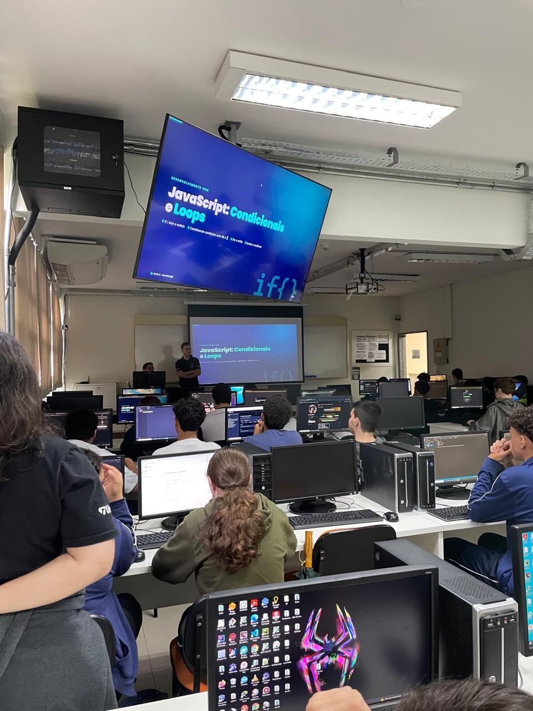

Relatório – 20ª Aula
Data: 06/10/2026
Turma: A
Instrutor: Victor
Praticando Java Script
Na aula de hoje o instrutor Victor deu continuidade ao aprendizado de JavaScript, fazendo uma revisão dos tópicos vistos anteriormente. Em seguida, seguiu para os laços de repetição, vistos nas aulas passadas, e passou exercícios para os alunos praticarem, e assim, fixarem o conteúdo aprendido. Durante a aula, auxiliei os alunos que apresentaram dificuldades, que na grande maioria, eram apenas erros simples de sintaxe, que corrigi junto a eles. No geral, foi mais uma aula bem tranquila, e os alunos conseguiram realizar os exercícios com facilidade.
